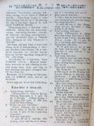
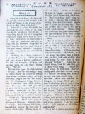
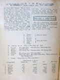
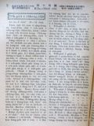

Languages
台文
｜
中文
｜
日本語
｜
English
字體
小
｜
中
｜
大
首頁
/
白話字數位典藏
白話字數位典藏全文檢索
查詢模式
選擇年代
清國時代(1885-1895)
日本時代(1895-1945)
戰後(1945-1969)
1885-1895
1896-1905
1906-1915
1916-1925
1926-1935
1936-1945
1946-1955
1956-1965
1966-1969
1970-1980
1980-1990
1990-2000
2000-2010
2010-
選擇文類
詩
散文
小說
戲劇
傳記
選擇作者
陳清忠
陳清義
編輯部
柯設偕
吳天命
明有德
偕叡廉
周天來
劉華義
王守勇
林茂生
陳添旺
柯維思
王占魁
賴仁聲
陳瓊琚
雪峰逸嵐
吳清鎰
郭水龍
蕭樂善
許水露
葉金木
陳金然
章王由
廖得
鄭連坤
潘道榮
楊士養
梁秀德
劉約翰
周淑慧
高金聲
林燕臣
黃六點
蔡愛義
許有才
主筆
巴克禮
郭朝成
陳鳩水
張基全
陳明清
陳能通
拾穗生
顏振聲
卓恆利
傳道局
胡文池
劉主安
鄭兒玉
詹德建
Google Search
Yahoo Search
全部
刊名
標題
標題(教羅)
全文
全文(教羅)
作者
第11頁，共93頁(共1,848筆資料) 0.62093210220337sec
1
...
9
10
11
12
13
...
93
To Page
GO
文字列表
圖文列表
排序
日期
文類
刊名
作者
影像

[1927-2 芥菜子 文類-選擇文類 作者-傳道局/Thoân-tō-kio̍k]
(2)
教會的消息 [ Kàu-hoē ê siau-sit ]
教會的消息。 1、 龍潭教會： 鍾會池執事老爸鍾錦彥佇1月14日有過往。出葬的日真鬧熱，有700外人來會葬。 2、 觀音山教會： 潘清河有娶 Mâ-lú人的姊妹潘氏A-bân，1月17號佇本堂合婚。 3、 月眉教會： 1月30日有設立梁阿亮做長老，也有接納2个大人領洗禮。 4、金包里教會： 有一个會友林爐過往sim chèng會友不止傷心。 5、新莊教會： 11月20號，有去中庄佈道，來聽的人共有26人。 6、 菝仔庄教會： 賴聰和有娶花蓮港教會的長老娘阿新的第二查某囝梁氏A-sīn。佇11月30日有舉行結婚式。 7、 鳳林教會： ...
[1927-2 芥菜子 文類-選擇文類 作者-郭水龍/Keh Chuí-lêng]
(2)
北部中會 [ Pak-pō͘ Tiong-hoē ]
北部中會 郭水龍 北部的中會2月13日下晡 2點鐘有聚集佇艋舺禮拜堂，來赴會宣教師4名牧師9名代議長老17名。 新議長牧師鍾天枝，新記事牧師、葉金木、張金波，掌數郭水龍照舊。 傳道局役員照舊，理事長換Kai Joē-lâm。 1、 佈道進行部照舊，另外派3名做專任佈道的工去逐位佈道。 2、 芥菜子編輯部佮台灣教會報編部合做一个編輯。 3、理事會請派2名佮in議論逐位拜堂欲設幼稚園。 4、 後回的新議案著2禮拜前寄交記事，然後通知議員。 5、派獨立的牧師巡視無獨立的同會。 水返跤同會 張金波 三角湧同會 ...

[1927-3 芥菜子 文類-散文 作者-偕叡廉/Kai Jōe-liâm]
(2)
聖日 [ Sèng-ji̍t ]
聖日 聖日抑是安息日、禮拜日，就是只寶貝的日。怎樣講是指寶貝的日？因為有一項的因端。 1、上帝有講，恁著用安息日，做聖的日永永記得毋通袂記得。伊命令咱佇六日的中間著做工，但是到第七日著歇睏來數念伊。 2、六日拖磨，六日無閒，六日掛慮，身軀厭懶，心神siān，佳哉七日一擺通安歇：身軀得著爽快，心神得著養飼。 3、佇上帝的聖殿相佮聚集禮拜。七日一擺佮四方的兄弟姊妹相見面，相交陪，相佮坐相佮敬畏，呵咾疼痛咱的天爸。 基督教以外無這款的機會。服侍神明的人無親像咱chiâu-ûn通歇睏：in也無同時相佮聚集，攏是單身去敬拜。所以有人捌講，基督教的信者真親切，真和心。這一部分無毋是對佇安息日交...
[1927-3 芥菜子 文類-散文 作者-陳清義/Tân Chheng-gī]
(2)
路得拾麥 [ Lō͘-tek Khioh be̍h ]
路得拾麥 路得記2章17節。 路得佇園裡拾到黃昏的時，後來將所拾的來拍，得著大麥有六斗。佇聖經中所記載的好好查某囡仔，路得一个在內。伊的孝行實在真可取，會堪得做人的模樣，對伊的丈夫過身了後，伊甘願佮伊的 ta-ke
[1927-3 芥菜子 文類-散文 作者-柯設偕/Koa Siat-kai]
(2)
台灣的名稱 [ Tâi-oân ê Bêng-cheng ]
台灣的名稱 咱本島，對古早以來，有濟濟的名稱，就是有真濟款的名。今這tia̍p愛寫遐个名，佮in 的由來，予大家做參考。 「台灣。」 早前，踮佇安平地方的熟番有號in彼地方，叫做「Thaⁿ-ian」，抑是「Thai-ian。」也後來支那人有將彼个名寫漢字，就是譯做現時這2字漢字，號做「台灣。」總是早前是kan-ta 指起安平的地方 nā-tiāⁿ，毋kú後來有將這个名－台灣做全島的名。咱今仔日所講，這个台灣就是對按呢來號的。也現時這个台灣的名是做本島的代表的的名。漢字就是臺灣，國語講，タイワソ英語講TAIWAN，這是咱逐人所知影。 「Takasago」－ 「Ko-sa」現時的...

[1927-3 芥菜子 文類-散文 作者-柯設偕/Koa Siat-kai]
(2)
台灣的生番 [ Tâi-oân ê chhiⁿ-hoan ]
台灣的生番 台灣的生番，毋是tú-tú siāng一款，有幾若款，幾若種族。 今將遮个生番族的名寫佇下底。 1. 泰雅 北部番 2. 賽夏 3. 布農 南部番 4. 鄒 5. 排灣 6. <...
[1927-3 芥菜子 文類-選擇文類 作者-郭水龍/Keh Chuí-lêng]
(2)
訂正 [ Tèng-chèng ]
訂正 前號的 「芥菜子」第 15面「北部中會」記事中第 3 條 「理事會請派2名佮in議論逐位拜堂欲設幼稚園。」愛盲啞照下底 若是有拜堂希望愛設幼稚園-的，請in來佮幼稚園的部會參詳。...

[1927-4 芥菜子 文類-散文 作者-陳清忠/Tân Chheng-tiong ]
(2)
特別的青年 [ Te̍k-pia̍t ē chheng-liân ]
特別的青年 路加2章。41-51節。 讀這10節的聖經，會發見一个特別的青年出來，kiám-chhái有人 teh奇怪講，青年就是青年，thài有一个特別的？實在有。 人出世佇這个世間，若無拄著夭壽，卻逐个會經過一擺偕叡廉的時期，佇彼个時期無攏相同，有的較有智慧，有的較戇，有的較gâu，有的較頇慢，總是遐的較出tioh 的人物，佇青年的時期，有顯出較特別的款，有的特別較gâu講話，有的特別較gâu想，有的特別gâu寫字，有的特別gâu辦事。遮个通講是平常青年的特別，袂得通講是，對古早以來，未捌有的青年，特別今愛求對古早以來，未捌有的青年特別者，有彼个人無？有，彼个是啥物人。耶穌，耶穌怎樣...
[1927-4 芥菜子 文類-散文 作者-雪峰逸嵐/Soat-hong Iat-lâm]
(2)
造化的奧妙 [ Chō-hoà ê Ò-biāu ]
造化的奧妙 北風li-li teh 吹，月光靜靜teh笑的一个暗暝，kia̍h頭看天，眾星點點四圍teh照光明的月顯出愛顧的情滿天清亮來蓋佇烏暗恬靜的世界。共伊想，日月的光星辰的濟，逐个安排佇伊的位，踮佇半空中光線四圍teh射盡in 的義務，行一定的路，顯出無限量的神秘， ná看ná想，ná想ná奧妙。 àⁿ落看地，青翠的花草，茂盛的樹木顯出笑容teh表明in 的滿足，遠遠看山青翠美麗。深深看海，水波漂亮，這幅大宇宙的圖，顯出無限量的神秘，ná看ná想；ná想ná奧妙。 閣看樹木青翠的中間有teh唱歌的鳥，顯明in 的歡喜，相叫跳舞teh快樂，in 的天然美景，閣看媠芳花的中間有真媠的...
[1927-4 芥菜子 文類-散文 作者--/-]
(2)
真的英雄 [ Chin ê Eng-hiông ]
真的英雄 佇這無偌久前，佇法蘭西-就是法國，有予全國的人來投票，就是予全國的人揀對古早到現今法國的英雄。看啥物人是法國第一英雄。這是通國的人投票來揀的所以真正確。 未揀的代先，逐國的人攏是想講拿破崙 (Napoleon) 會得著第一名。 毋kú到通國攏揀清楚的時，彼个結果是按呢：- 第一，Pha-su-teh (Pasteur)。 (Pha-su-teh是發見細菌 Ba-ku-the-lí-á的人，是出名的顯微鏡學者。 第二，Iú-gó (Hu-go) (Iú-gó 有名的文學家佮詩人，有著濟濟本出名的小說) 第三，Gán-bē-ta (Gambetta) (Gán-be-...
[1927-4 芥菜子 文類-散文 作者-張基全/Tiuⁿ Ki-choân]
(2)
一般科學之常識 [ It-poaⁿ kho-ha̍k ê siông-sek ]
一般科學之常識 現時世間的文明進步，濟濟是倚靠科學的氣力。有人按呢teh講「國家會通對伊化學工業有發達抑是無來知彼國的文明程度到佗位。」 所以咱人踮這世間生活佮化學的關係，ná久是ná大；我因為咱的報紙有限(紙面有限)，袂通將一般科學講到極詳細，大略欲講起近代化學文明的一般佮應用化學的結果是啥物款，所以kiám-chhái佇遮所講的袂通做工業專門家的參考毋kú若會幫贊予看報的兄姊得著科學普通的智識，佮近代化學的成功就是我的心所願。 古早濟濟項物，h親像咱常常teh食的砂糖是著對生物體來得著，抑是親像lām-sek的染料 (青藍：lndigo-blue)早攏是對田菁仔彼款天然植物來做的，...
[1927-4 芥菜子 文類-散文 作者-陳清忠/Tân Chheng-tiong ]
(2)
一滴一滴的水 [ Chi̍t tih chi̍t ti̍h ê chuí ]
「一滴一滴的水」 (26) 靈魂佮感情的重量 A、靈魂的重： 美國有一个博士名叫Má Lō͘-ka。伊佇幾若年前有真斟酌研究論人的靈魂的重，也發表講伊有用真精密的法度檢定靈魂的重約略有6 錢外。 伊將一个真傷重teh欲死的肺病患者，參伊的眠床 hē佇真精密的天秤的頂面，也徛teh注目斟酌共伊檢查伊的體量。彼个患者，為著伊的呼吸中的濕氣佮h發汗的因端，每時間有減伊的重約略8錢。 過 3點閣40分彼个患者的靈魂走出伊的身軀，死去，tú-tú 過氣的時陣天秤忽然一時閣減 6錢外。這个6錢外，Má Lō͘-ka斷定就是靈魂的重量。 Tāi-liân博士是美國人，伊有予一个查埔人坐佇椅裡...
[1927-4 芥菜子 文類-散文 作者-王守勇/Ông Siú-ióng]
(2)
雜記 [ Cha̍p-kì ]
雜記 1) 建築費攏總開出有十外萬箍，攏燒到親像火炭遐爾烏，就是同志社女學這擺有火燒厝，所以逐項物件大半變火灰。研究彼个原因是對兩个少女相怨妒，所以一个佇半暝去放火是tiâu-tì-kò͘。雖然緊緊走去藏佇棉被底，假死tìⁿ毋知講堂已經teh 著火，總是到警官攏總來，知影蓋袂密才事實一盡排。逐項事未創的代先著注意，聽候做了才知毋著已經是歹代誌，親像這个少女看見火沖天才知害，這就是後悔不及，所以猶原著受縛到監獄內。 2) Tō͘-si̍t Put-ti--jîn先生(天幕報導隊的頭)佇3月20號過身。伊佇6、7年前也捌來咱台灣傳道理，專專是倚靠主耶穌的名teh 共人醫病佮行神跡。這擺為著伊...
[1927-4 芥菜子 文類-選擇文類 作者-傳道局/Thoân-tō-kio̍k]
(2)
教會的消息 [ Kàu-hoē ê Siau-sit ]
教會的消息 1、大稻埕教會： 三月頭禮拜有守聖餐。共108人。 2、瑞芳教會： 三月20號有守聖餐，有行洗禮予兩个大人佮四个囡仔。 3、金包里教會： 有設立兩个長老，一个執事。 4、頂雙溪教會： 本月頭禮拜有一家姓魏來做求道者。當職的人有去in 的厝佈道，也紲共 in 收偶像。 5、新埔教會： 三月15號。林理聖的第三囝林理奉有過往。 27號。湖口庄人范阿聖有來做求道者。 6、士林教會： 三月27號，士林保正的第二囝Keh Khim-土有來做求道者。 7、南庄教會： 近來教會有減，因為這个地方無啥物有新的事業，會友無頭路，濟濟愛搬去別位。本月有2家共12人徙去草...
[1927-8 芥菜子 文類-散文 作者-陳清義/Tân Chheng-gī]
(2)
成聖的要緊 [ Chiâⁿ-sèng ê iàu-kín ]
成聖的要緊 羅馬12章1節。 保羅苦勸羅馬的兄弟愛in著成聖也是苦勸咱著成聖。論這个愛咱成聖的道理，通講是基督教的教示，第一順全，儒教雖罔tiàm佇Sek教，道教的頂面，iáu-kú這款的道理袂得著詳細，雖罔聖人，也毋敢凊彩講。保羅佇遮敢明明講，可見伊有得著這个地步就是對聖神來成就的。 論成聖甚物意思。 成聖，就是聖，善，攏齊備，無閣犯罪無入迷惑，這款的工夫毋是人的氣力所會成的，獨獨聖神會成的。聖神會造就咱，予咱到佇成聖的地步。按呢咱人m̄通倚靠家己的氣力，來向望成聖，著倚靠聖神的扶助。 論成聖甚物人著有。 就是基督徒所著有的，怎樣按呢，因為聖經明明講。揀召恁的就是聖，恁也著聖，人...
[1927-8 芥菜子 文類-散文 作者-偕叡廉/Kai Jōe-liâm]
(2)
馬太馬可牧師 [ Má-thài Má-khó Bo̍k-su ]
馬太馬可牧師。 佇美國有一位牧師名叫馬可姓做馬太這款的名姓，實在真罕有。馬太馬可牧師佇宗教中是世界大人物的一个。伊的學問深，伊的 口才好，伊的信tek堅固，伊的心志熱，伊的謙卑，伊的疼痛會堪得做人的模範。牧師的教會就是通世界長老教會中第一大的。會友有4000外人，長老有150人。 我對久久就捌聽見馬太博士的名，也常常欣慕愛聽伊傳主的福音。拄好佇4年前去加州的時有聽見講某禮拜欲請博士來演講。彼早起我量較早去赴禮拜。到位拜堂已經坐到欲tīⁿ-tīⁿ，若是猶有規陣人直直來，到尾袂得入，著佇外面徛。 閣無偌久馬太博士上台頂。伊是50外歲人，sán-sán，總是伊的懸約略有6 呎 3吋。 吟詩...
[1927-8 芥菜子 文類-小說 作者-詹德建/Chiam Tek-kiàn]
(2)
老母予蜂叮著的時 [ Lāu-bú hō͘ phang tèng-tio̍h ê sî ]
「老母予蜂叮著的時。」 這个故事是我對一本冊看的，我看了有大感激我的心，也不止心適，所以我有想欲報予大家知。若會做大家的利益是真好。 「有一擺一个牧師，問一个囡仔講，你對甚物是就捌救主，也你的罪，得著赦免的事你kám實在知影mah？囡仔隨時應講著，我的罪得著赦，我有實在知影。」「你會知是甚物時？」囡仔隨時in講，「老母予蜂叮著的時」。「老母予蜂叮著的時，這是甚物意思？」囡仔應講；我的老母對真早的時，就常常教示我講救主有替我死，總是我袂會了解彼个意思。有一年的夏天，老母佇灶腳的隔壁間，兩个手ńg pih懸懸teh熨衫我佇外口的埕teh thit-thō 的時，忽然一隻的虎頭蜂...
[1927-8 芥菜子 文類-散文 作者-蕭樂善/Siau Lo̍k-siān]
(2)
聖經研究會 [ Sèng-keng gián-kiù-hoē ]
聖經研究會 聖經有包上帝的性質佇teh。人欲實在捌伊著tháu開到得著彼个實在的。野球(baseball)是真硬，外面chhòng細pán的樹奶來包，真oh得算lìn，我拍算規粒是按呢來成的，我就直直共伊留到內面就得著這粒實腹的樹奶球。內面是樹奶外面亦是樹奶；總是無相同。平常的捌上帝佮入佇聖經的深奧來捌的上帝是無相同。 深捌上帝才會知上帝對咱有甚物款的要求，亦才會順命令。聖經的智識就是教會的財產佮教會的地基，快搖choah，快犯罪的教會就是地基無hē佇實在的地。咱逐人無掠聖經的智識做無要緊，就用心來想來研究亦的確無看輕。這是現時教會所欠的一項。 欲讀，抑是越念聖經...
[1927-8 芥菜子 文類-散文 作者-柯設偕/Koa Siat-kai]
(2)
台灣的產物 [ Tâi-oân ê sán-bu̍t ]
台灣的產物 (柯設偕) 台灣的產物，通講是真濟款。其中，較要緊的，愛寫淡薄。 米，(中部出第一濟) 一年5000000石-就是5百萬石。 茶，(北部山地出第一濟。) 一年會收成12擺以上。 一年26000000斤-2千6百萬斤。 糖。(南部出第一濟) 甘蔗一年出6200000000-62億斤。 芎蕉-一年1900000000斤。 王梨-一年8000000斤。 柑桔-一年9600000斤。 龍眼-一年2300000斤。 蕃薯-一年1600000000斤。...
[1927-9 芥菜子 文類-散文 作者-陳清義/Tân Chheng-gī]
(2)
信心得救佮賞罰行為 [ Sìn-sim tit-kiù kap Sióng-hoa̍t hêng-uî ]
信心得救佮賞罰行為 兄弟ah！我今仔日對恁所講的題目，是真要緊：咱大家來信基督耶穌，是愛靈魂得著救。耶穌講，信的人免到滅無反轉得著永遠活。約翰3：16。信的人已經出死入活。約翰5：24。按呢信就得著救，是主耶穌基督的應允，也是上帝的旨意，毋是人的話，永遠袂會改變。咱若信伊，永久靠得chū。有人問講，去信耶穌是真容易，總是信耶穌以後，行為一舉，一動：攏愛親像耶穌的款，這是為難，卻有影。行為是信心的果子。得著報賞的代價佮得救的大道，毋通相參，得救的大道佮報賞，根本不同，聖經中有講真清楚。看路加23：39-43。Kiông-tô͘的得救。哥林多前書5：1-5。受趕出的教會犯罪的信徒得著救。...
第11頁，共93頁(共1,848筆資料)
1
...
9
10
11
12
13
...
93
To Page
GO
數位典藏國家型科技計劃
拓展台灣數位典藏計畫
版權所有 國立台灣師範大學 台灣文化及語言文學研究所©2008
10610 台北市和平東路一段162號│TEL 02-7734-5516│Fax 02-2358-2461
計劃簡介
典藏特色
執行架構
計畫典藏數位化流程
成員介紹
台灣白話字發展簡介
巴克禮牧師與《台灣教會公報》
廈門話字典-杜嘉德
白話字教學-打馬字
中國南方白話字發展
台灣基督教長老教會簡表
台灣基督教長老教會教會歷史委員會
《北部台灣基督長老教會教會ê歷史》
關於陳清忠
白話字文學：台灣文學的早春